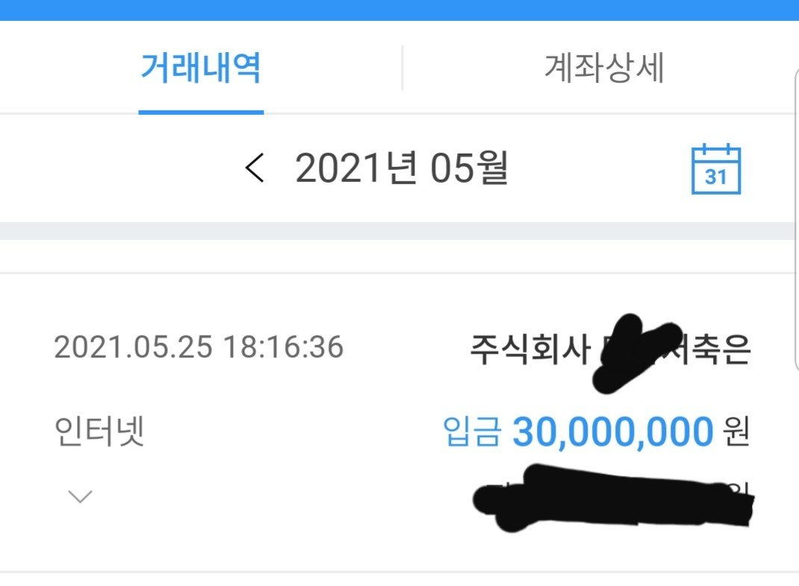

[직장인대출] 김한수 상담사님 감사합니다

면책 받은지 두달인데 대출 안받을려고 했으나
사람일 알수 없다고 대부대환, 의료비,
생활비용으로 3000만원 대출을 받게 되었습니다.
재직기간은 1년이고 급여는 세후352만원
기대출은 대부 550만원
상담내용중 말하지 말아야 될걸 잘못 말해서
ㅇㅅㅂㅇ, ㅇㅋㅇ, ㅇㅅ저축은행 부결
업무 하느라 전화 받느라 초조하고 힘들었던
순간 김한수상담사님이 ㅁㅇ저축은행을 통해
다시 상담받고 21.1%로 대출이 신청 처리 되었습니다.
이때가 저녁6시였고 전자서명도 부랴부랴 끝나고
통장으로 대출금을 받게 되었습니다.
정말 오늘 하루 피말리는 하루였는데
다시한번 찾을때마다 도와주신 김한수 상담사님께 감사드립니다.